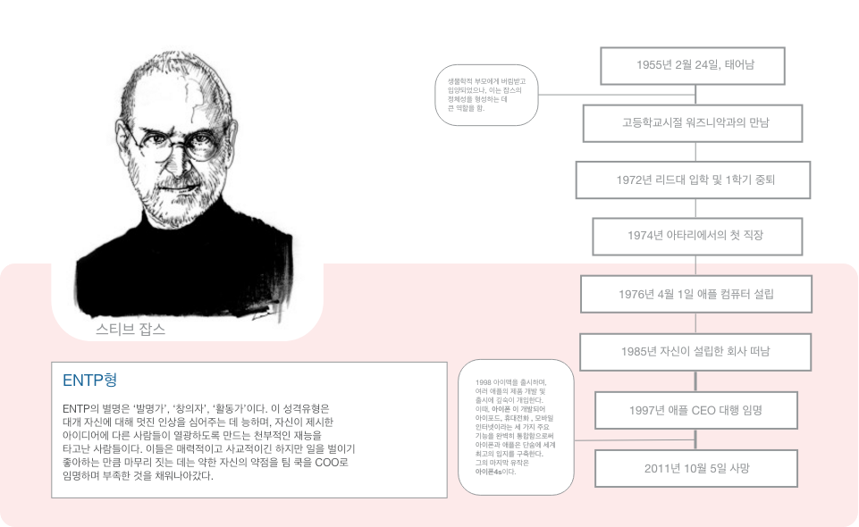

생물학적 부모에게 버림받고 입양되었으나, 이는 잡스의 정체성을 형성하는데 큰 역할을 함.
1998년 아이맥을 출시하며, 여러 애플의 제품 개발 및 출시에 깊숙이 개입한다. 이 때, 아이폰이 개발되어 아이포드, 휴대전화, 모바일, 인터넷이라는 세 가지 주요 기능을 완벽히 통합함으로써 아이폰과 애플은 단숨에 세계 최고의 입지를 구축한다. 그의 마지막 유작은 아이폰4s이다.
